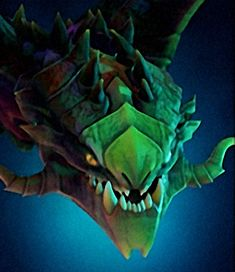

Dota Manual
Dota добра

Viper

Біографія
Мільйони років раса незердрейків була заточена в осяйних печерах Попідзем’я, де опинилася після страшного тектонічного зсуву. Коли нарешті одному з них, Вайперу, пощастило вирватися у відкритий світ, від радощів він не стямився, як опинився в полоні мага із садистськими схильностями. Чаклуну так і не вдалося до кінця приручити крилатого змія, проте Вайпер деякий час підкорювався його наказам, сподіваючись навчитися темній магії. Зрештою змій зрозумів, що переважна більшість заклять його володаря й близько не були такими смертельними, як його власні токсини. Своїми кислотами Незердрейк швидко роз’їв ґрати клітки, плюнув отрутою в очі старому чаклуну та опинився на волі, аби показати світу, що явився новий повелитель.
| 21 + 2.4 | |||||
| 21 + 2.5 | |||||
| 15 + 1.8 | |||||
| 25-27 | |||||
| -2.0 | |||||
| 275 | |||||
| Рівень | 1 | 15 | 25 | 30 | |
|---|---|---|---|---|---|
| Пошкодження | 46-48 | 81-83 | 106-108 | 118-120 | |
| Здоров'я | 620 | 1280 | 1760 | 2000 | |
| Мана | 255 | 555 | 771 | 879 | |
| Захист | 1.36 | 6.96 | 10.96 | 12.96 | |
| Час атаки | 1.35 | 1 | 0.84 | 0.78 | |
| Атак в секунду | 0.71 | 0.92 | 1.06 | 1.14 | |
| Дальність огляду | 1800 / 800 | ||||
| Дальність атаки | 575 (дальній бій) | ||||
| Базовий реген | 0 | ||||
| Базовый манареген | 0 | ||||
| Дерево навичок | Рівень | Навик | |||
| 25 | Poison Attack можно применять на постройки | Nethertoxin запрещает применять способности | |||
| 20 | +70 к урону | +80 к урону в секунду от Viper Strike | |||
| 15 | +5 к показателям Corrosive Skin | +100 к дальности атаки | |||
| 10 | +8% вампиризма от способностей | +20 к скорости атаки | |||